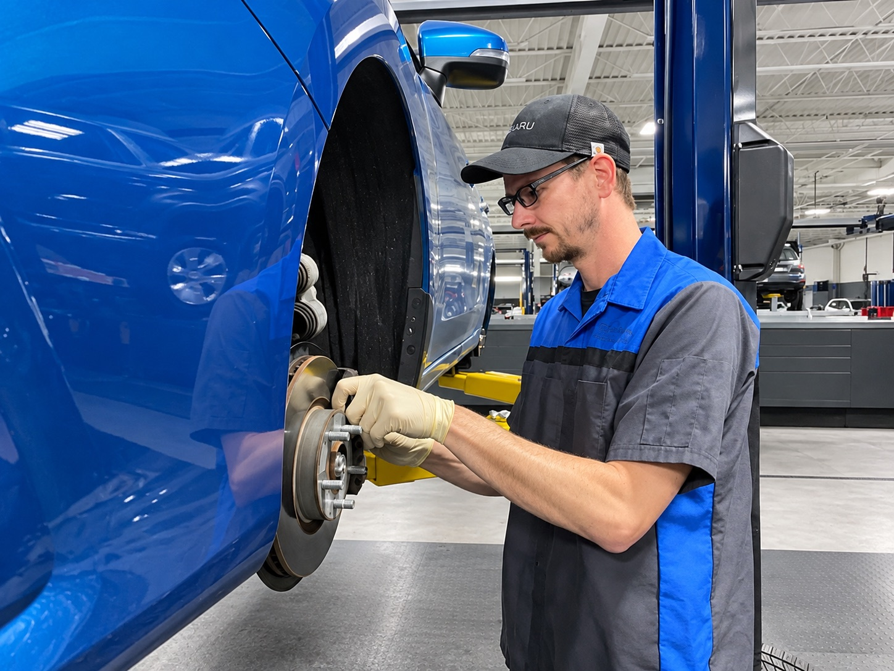
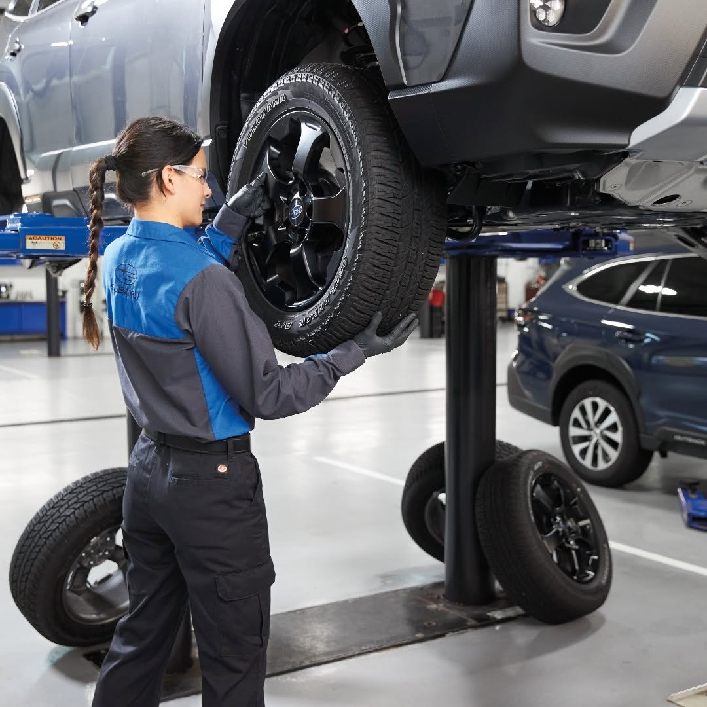
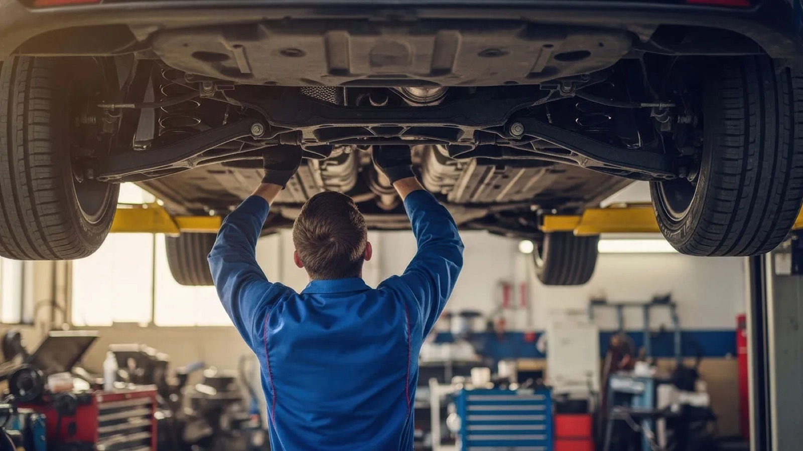
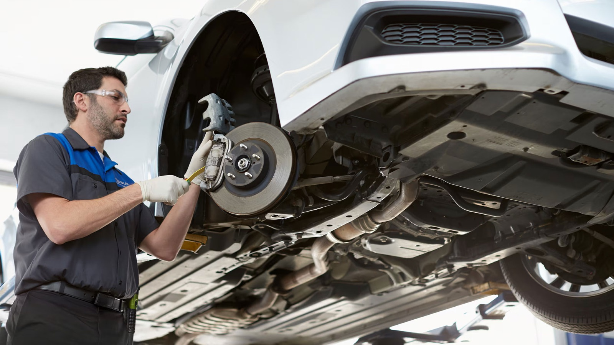
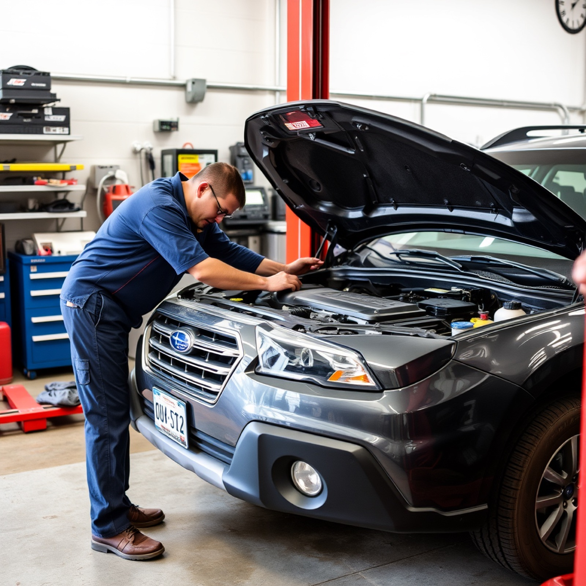

Step 01Inspect
Measure everything first
Measure front and rear pad thickness, check rotor condition and thickness against the minimum specification, and inspect caliper movement, hardware, and fluid before recommending any parts.
If your Subaru squeals, pulses, or takes longer to stop, the brake pads are the first thing to check. We measure them and quote the full job in writing before any work starts.

The friction material gets thinner as you drive until it reaches its wear limit and needs to be replaced. Prescott's steep grades and stop-and-go traffic can wear brake pads faster than driving mostly on flat highways. Our certified service team measures the brake pads before making any recommendations.
Watch for these signs:
Some Subaru models have brake pad wear indicators that can trigger a dashboard alert. Do not wait until you hear grinding. Grinding can mean the brake pads are worn through and the rotors may also need to be replaced, which can cost more than replacing the pads alone.
Brake pad life depends on how you drive, not just mileage, so city driving can wear pads faster than highway driving. Front pads usually wear out before rear pads because the front brakes do most of the stopping.
60-second brake check
Do your brakes need looking at?
A quick self-check, not an inspection. Whatever it flags, our techs measure all four corners on the service drive before any work.
A brake pad service at our shop starts with measurements, including front and rear pad thickness, rotor condition, caliper movement, and brake fluid. We show you the results before recommending pads, rotors, or both. Here is what our service team does.

We use parts matched to your Subaru. Brakes are a safety system, so fit and friction rating matter. If your rotors are below spec, resurfacing or replacing them is part of a proper repair, not an upsell.
Reviews regularly note our thorough inspections. That is the standard we hold.
Measure front and rear pad thickness, check rotor condition and thickness against the minimum specification, and inspect caliper movement, hardware, and fluid before recommending any parts.
We show you the measurements and recommend pads, rotors, or both. You decide what to do before any work begins. Our advisors are not commissioned, and our pricing is transparent.
Install pads matched to your model's specifications and friction rating, resurface or replace rotors if they are below specification, and fit new hardware where needed.
Caliper slide pins are serviced so the new pads can move freely. Sticking slide pins can cause noise and uneven wear, even when the pads are otherwise in good condition.
New pads are bedded in, and the vehicle is road-tested before it is returned to you, so the repair is confirmed on the road, not simply assumed on the lift.
Parts matched to your exact Subaru, whether you drive a Forester, Outback, Crosstrek, Ascent, or Solterra, because brakes are a safety system and the correct friction rating matters.
Brake pads are the friction parts. Brake fluid is the hydraulic fluid that pushes the calipers. They are related, but they are separate services on separate intervals, and one does not cover the other.
You may need a fluid flush with healthy pads, or new pads with healthy fluid. You might assume one service covers both, but it does not.

Pads respond to how hard and how often you brake. Fluid degrades on the calendar as it absorbs moisture, whether you drive or not. That is why the two land on different schedules, and why our advisors check both on every brake visit rather than assuming one covers the other.
If a brake job brought you in, you are not alone, and often the noise is not from the pads at all. Brand-new pads can squeal too, often from hardware or a break-in issue, not wear. The only way to know is to measure.

With non-commissioned staff and transparent pricing, our advisors have no reason to push extra work, and our reviews echo the no-pressure, no-upselling theme again and again.
"A squeal does not always mean worn pads, and new pads can squeal too. The only way to know is to measure, and we show you the measurements before we touch anything." Fixed Operations Director · Findlay Subaru Prescott
Our service department runs Monday through Friday, 7:00 AM to 6:00 PM, and Saturday, 8:00 AM to 4:00 PM for Express Service. We are closed Sunday. Express Service handles lighter jobs and walk-ins, with Monday-through-Friday walk-ins stopping at 4:00 PM.
| Day | HoursService department | NotesWhat to expect |
|---|---|---|
| Mon–Fri | 7:00 AM – 6:00 PM | Full service · Express walk-ins available until 4:00 PM |
| Sat | 8:00 AM – 4:00 PM | Express Service only · lighter jobs and walk-ins |
| Sun | Closed | No service |
Heavier brake jobs may be better scheduled on a weekday when the full service team is available. Saturday Express is best suited for lighter service needs. The easiest way to plan ahead is to schedule service online and let us confirm timing.
Brake pads and rotors are wear items, so they are not covered the same way powertrain components are. But if a brake component fails because of a defect rather than normal wear, different coverage may apply. Our team will review the issue with you and explain what is covered.

Ask us to run your VIN for open safety recalls, and for current service offers on your model.
For any brake question or to schedule a service appointment, get in touch with us. We will confirm what your exact model and mileage call for and check your VIN before quoting the visit.
If you hear a squeal, feel a soft pedal, or see a warning light, get your brakes measured. A measured inspection can confirm that your brakes are in good shape or catch wear before it leads to rotor damage. Schedule your brake pad inspection with us today.
A squeal does not always mean worn pads, and brand-new pads can squeal too. The only way to know is to measure, so we check pad thickness and rotor condition, then show you the numbers before recommending any work. If your brakes are healthy, we say so.
Our advisors are non-commissioned, with transparent pricing and no reason to push extra work. Reviews repeatedly mention the no-pressure, no-upselling approach, along with thorough inspections and fixing what needs to be fixed. Every visit is logged against your VIN.
3230 Willow Creek Road, Prescott AZ 86301. Mon–Fri 7–6, Sat 8–4 (Express only, walk-ins Mon–Fri until 4 PM), Sun closed. Part of Findlay Automotive Group (founded 1961). Schedule service online.
Find our hours, address, and contact info anytime through our website.
Listen for a high-pitched squeal when braking, which often signals a wear indicator. A grinding sound usually means the pad is gone and metal is contacting the rotor. A longer stopping distance, a soft pedal, or a dashboard brake light are also signs. The safest answer is a measured inspection, which our service team does on every brake visit.
It depends on how and where you drive, not only mileage. City and mountain driving wear pads faster than flat highway miles. Front pads typically wear before rear pads. Check your owner's manual for the inspection guidance specific to your model and year, and have them measured if you are unsure.
Not always. If the rotors are within spec and in good shape, they can sometimes be resurfaced or left in place. If they are worn below the minimum thickness or warped, they need replacing. Our team measures the rotors and shows you the numbers before recommending anything.
No. Brake pads are friction parts that wear mechanically. Brake fluid is hydraulic fluid that absorbs moisture and is flushed on a time-based interval. You can need one without the other. See our Subaru brake fluid and brake service page for the fluid side.
Yes, with limits. Our service department is open Saturday from 8:00 AM to 4:00 PM for Express Service. Heavier brake jobs may be better scheduled on a weekday when full service runs. The easiest path is to schedule service online and let us confirm timing.
New pads can squeal during break-in or from hardware that needs lubrication, which does not mean they are worn. A glazed pad surface or a sticky caliper slide pin can also cause noise. The only reliable way to find the cause is to measure and inspect, which is what our service team does before recommending any repair.